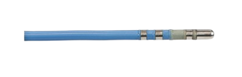

Donde la pasión por el deporte se encuentra con el poder de la medicina
Tecnología que transforma vidas, impulsa el rendimiento y cuida del futuro de los atletas
EN JOHNSON & JOHNSON MEDTECH CREEMOS QUE EL FUTURO DEL DEPORTE SE IMPULSA CON CIENCIA, TECNOLOGÍA E INNOVACIÓN.
Por ello, desarrollamos y ofrecemos soluciones médicas de vanguardia que acompañan cada etapa del desempeño deportivo: desde la prevención y el diagnóstico, hasta la recuperación y el alto rendimiento. Nuestro compromiso es apoyar a atletas, entrenadores y profesionales de la salud en la construcción de un deporte más seguro, eficiente y sostenible.

Catéter